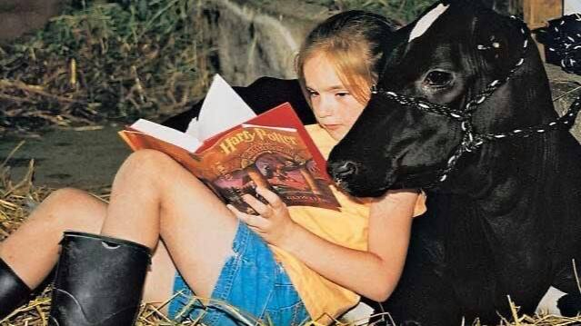

Советы
новичкам
Первые шаги в мире конного спорта: что нужно знать,
как подготовиться и чего ожидать от общения с лошадью.

Общение с лошадьми — это не только удовольствие, но и большая ответственность. Лошадь — крупное животное с собственным характером. Чтобы ваше знакомство прошло безопасно и комфортно, обязательно ознакомьтесь с базовыми правилами.
Правила безопасности
- Никогда не подходите к лошади сзади. У лошадей отличный слух, но ограниченный обзор сзади. Испугавшись, она может ударить копытом.
- Подходите спереди или сбоку. Окликните лошадь, чтобы она вас заметила, прежде чем приблизиться.
- Не делайте резких движений. Лошади пугливы. Громкие крики, размахивание руками или бег рядом с лошадью могут спровоцировать панику.
- Кормите только с разрешения инструктора. Не все продукты полезны для лошадей. Кроме того, при кормлении с рук животное может случайно укусить.
Что надеть на первое занятие?
Если вы едете на пробную прогулку или первый урок, вам не обязательно сразу покупать дорогую экипировку. Главное — соблюдать несколько правил:
- Обувь: Кроссовки или ботинки с небольшим каблуком и гладкой подошвой. Обувь не должна проваливаться в стремя.
- Одежда: Удобные обтягивающие штаны (джинсы или легинсы). Избегайте широких штанов, которые могут запутаться в седле.
- Защита: Обязательно возьмите защитный шлем (обычно его выдают в клубе).
«Лошадь чувствует ваше настроение. Если вы боитесь и напряжены, она тоже будет нервничать. Дышите глубже и доверяйте тренеру».